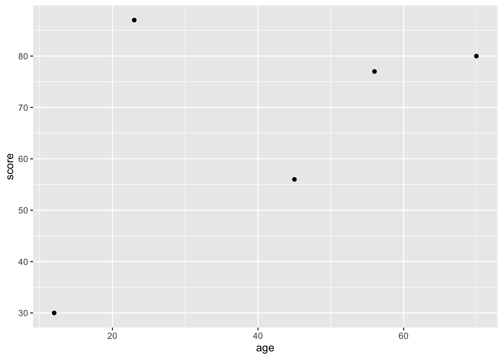
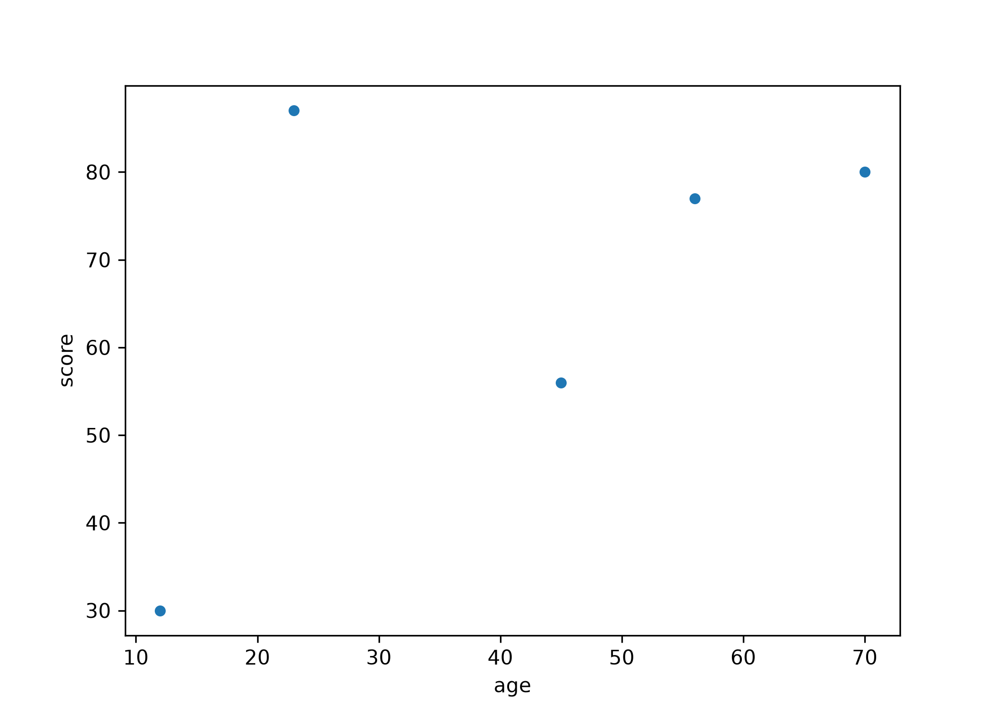

data <- data.frame(
age = c(23, 45, 12, 56, 70),
score = c(87, 56, 30, 77, 80)
)
data#> age score
#> 1 23 87
#> 2 45 56
#> 3 12 30
#> 4 56 77
#> 5 70 80Every cell on this page is a real R or Python cell. Copy the code in your chosen language, run it, and read the output. Then read the other tab. The point is not to memorise either one — it is to be able to open a colleague’s script in the language you do not use and still follow what it does.
The two languages carry two different ideas of what an analysis is. In R the thing you hold is the data frame, and the verbs act on whole columns. In Python the thing you hold is an object, and you call methods on it. Most of what looks unfamiliar in the other language comes from that one difference, so it is worth keeping in mind as you read.
This page walks through the four libraries you will use most, one pairing at a time: the Python library first by name, then the R package that does the same job.
Five patients, two columns: age in years, and score, an Injury Severity Score. Small enough that you can check every result by eye, which is the only reason to use a toy dataset — from ?sec-pipeline onwards the files are real extracts with real problems.
data <- data.frame(
age = c(23, 45, 12, 56, 70),
score = c(87, 56, 30, 77, 80)
)
data#> age score
#> 1 23 87
#> 2 45 56
#> 3 12 30
#> 4 56 77
#> 5 70 80import pandas as pd
data = pd.DataFrame({
"age": [23, 45, 12, 56, 70],
"score": [87, 56, 30, 77, 80]
})
data#> age score
#> 0 23 87
#> 1 45 56
#> 2 12 30
#> 3 56 77
#> 4 70 80pandas → dplyr, from the tidyverseBoth are for data wrangling: selecting, filtering, sorting, summarising. Here, keeping only the patients over 20.
library(dplyr)
filtered_data <- data %>% filter(age > 20)
head(filtered_data)#> age score
#> 1 23 87
#> 2 45 56
#> 3 56 77
#> 4 70 80filtered_data = data[data["age"] > 20]
filtered_data.head()#> age score
#> 0 23 87
#> 1 45 56
#> 3 56 77
#> 4 70 80Read the two side by side. filter(age > 20) names the column directly, because dplyr already knows which frame you mean. data[data["age"] > 20] has to name the frame twice: once to build the vector of True/False, once to subset with it. Same result, different notion of where the data lives.
scikit-learn → tidymodelsBoth are for building machine learning pipelines. Here, fitting a linear regression of score on age.
In R you have already done this in Module 2, with lm() from the stats package in base R:
model <- lm(score ~ age, data = data)
summary(model)#>
#> Call:
#> lm(formula = score ~ age, data = data)
#>
#> Residuals:
#> 1 2 3 4 5
#> 30.696 -12.024 -20.443 3.115 -1.343
#>
#> Coefficients:
#> Estimate Std. Error t value Pr(>|t|)
#> (Intercept) 44.0504 21.9758 2.004 0.139
#> age 0.5328 0.4743 1.123 0.343
#>
#> Residual standard error: 22.48 on 3 degrees of freedom
#> Multiple R-squared: 0.2961, Adjusted R-squared: 0.06141
#> F-statistic: 1.262 on 1 and 3 DF, p-value: 0.3431In Python the same fit comes from scikit-learn:
from sklearn.linear_model import LinearRegression
model_py = LinearRegression()
X = data[["age"]] # 2-D: a frame, because sklearn expects a matrix of predictors
y = data["score"] # 1-D: a series, the target
model_py.fit(X, y)LinearRegression()In a Jupyter environment, please rerun this cell to show the HTML representation or trust the notebook.
print(model_py.intercept_, model_py.coef_)#> 44.050382766601395 [0.5327577]The coefficients agree. They are a property of the data, not of the software, and that is the reassuring half of this page.
What differs is what each returns. lm() hands back a statistical summary — standard errors, residuals, an F test — because R’s linear model was written for inference. LinearRegression hands back coefficients and a .predict() method, because scikit-learn’s was written for prediction. Neither is wrong; they were built to answer different questions.
R can also do it the scikit-learn way. tidymodels sets the model up in the same three moves — define the algorithm, give it the data, fit it:
library(tidymodels)
lm_model <- linear_reg() %>%
set_engine("lm") %>% # use lm()'s implementation underneath
set_mode("regression")
lm_fit <- lm_model %>%
fit(score ~ age, data = data)
lm_fit[["fit"]][["coefficients"]]#> (Intercept) age
#> 44.0503828 0.5327577Note what set_engine("lm") is doing: the specification above says linear regression and nothing about how to compute it, and the engine supplies the arithmetic. Swap in "glmnet" and the first half of that code is unchanged. That separation is what makes the pipeline in ?sec-pipeline swappable, and it is why tidymodels is worth the extra typing for a model lm() could have fitted in one line.
seaborn → ggplot2Both are for plotting. Here, a scatter of score against age.
library(ggplot2)
ggplot(data, aes(x = age, y = score)) +
geom_point()
import seaborn as sns
import matplotlib.pyplot as plt
sns.scatterplot(x = data["age"], y = data["score"])
plt.show()
The + in ggplot2 is not decoration. A plot is a stack of layers and you add them one at a time, which is why the next task is a one-line change rather than a rewrite.
numpy → base Rnumpy is Python’s array library; in R, arrays and the arithmetic on them are in the language itself, so there is nothing to load. Here, a dot product.
a <- c(1, 2, 3)
b <- c(4, 5, 6)
dot_product <- sum(a * b)
dot_product#> [1] 32import numpy as np
a = np.array([1, 2, 3])
b = np.array([4, 5, 6])
dot_product = np.dot(a, b)
print(dot_product)#> 32a * b multiplies element by element in both languages, and sum() adds the result. np.dot does both in one step. This is the pairing where R needs no library at all, which is worth knowing when you read R code and cannot find the import.
Add the fitted line to the scatter. In ggplot2 it is one more layer: look up geom_smooth() and give it method = "lm". Then find the Python equivalent — seaborn has a function that draws a scatter and its regression line together.
# Replace every ______ below, then run this cell.
ggplot(data, aes(x = age, y = score)) +
geom_point() +
______(method = "lm", se = FALSE)# Replace every ______ below, then run this cell.
sns.______(x = "age", y = "score", data = data)
plt.show()In R the layer you want starts with geom_. In Python the seaborn function you want starts with reg.
Take your time now and explore these two libraries a little further. When something in class is unclear, these are the first places to look — both are written to teach, not only to document:
A longer side-by-side comparison of the two languages, if you want one: occasionaldivergences.com/posts/python-intro.
Can: that you can filter, fit and plot in both languages, and that the coefficients you obtained are a property of the data rather than of the software that computed them.
Cannot: anything about how well this model predicts. Five patients, and every number computed on the same five. That is where ?sec-pipeline starts.